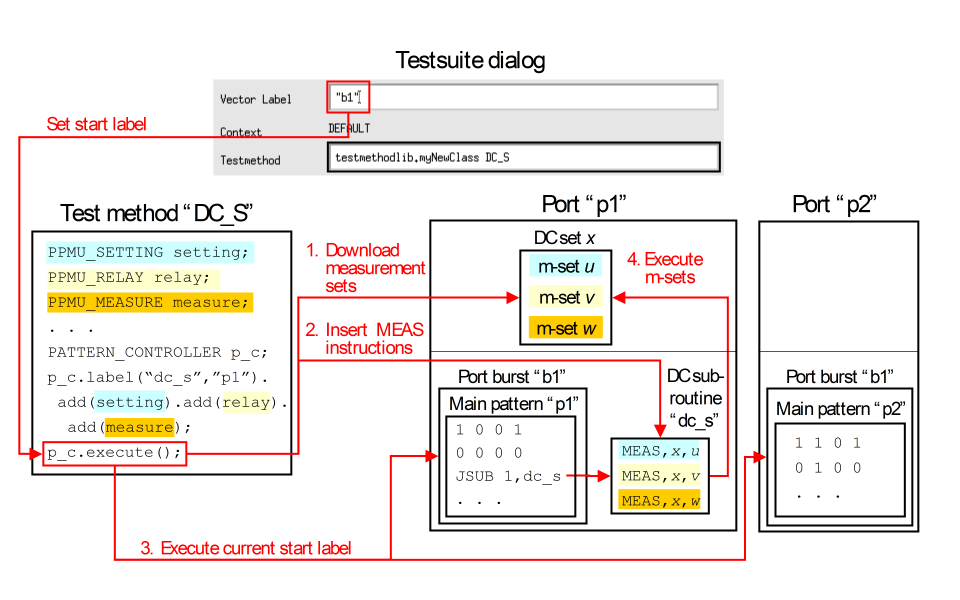

Executing PPMU tests from a pattern
You can run predefined PPMU tests from within a pattern with the sequencer instruction MEAS. This can be used to:
- Execute PPMU tests for one port in parallel with digital tests for other ports in a multi-port environment.
- Alternate digital and PPMU DC tests in one test run without having to perform a time-consuming restart of the sequencers after the PPMU test.
The main tools for setting up and executing such a DC pattern are the PATTERN_CONTROLLER and PATTERN API's. These API's serve to:
- Download a collection of measurement sets defined with the PPMU_SETTING, PPMU_RELAY, and PPMU_MEASURE API's (abbreviated from now on as PPMU_XXX).
- Insert a MEAS sequencer instruction for each of these measurement sets into a predefined empty subpattern.
- Execute the current primary sets.
If you set up the DC pattern with the PATTERN_CONTROLLER and PATTERN API's, which is recommended, the DC pattern must be a subpattern, and must not contain any vectors or other sequencer instructions. It is exclusively intended for the execution of the PPMU tests.
In the multi-port case, the DC test subpattern must be called from a main pattern of the desired port, and the main pattern in its turn must be made part of a multi-port burst. Finally, the multi-port burst must be specified as the start label of the respective testsuite.
With this construction the PPMU tests can be executed in parallel with any digital test for the other ports. The following figure illustrates the runtime flow:

The DC set numbers and the measurement set numbers depend on the previous testsuites of the testflow (see DC set management) and are therefore represented by the placeholders x and u, v, w, respectively.
In the single-port case, the DC subpattern and the calling main pattern must be defined for the default port @.
The pins of a port on which a MEAS instruction is being executed are fed with break vectors during the execution of MEAS. The time span needed for one MEAS instruction is roughly determined by
n × 8 × period_length + wait_time,
where n is the number of actions in the measurement set, and wait_time is the waiting time specified by the user for the measurement set.
The typical time required for a BADC or PPMU measurement can be calculated as follows:
| twait = (25 μs + N * 4 μs) | ||
| where: | 25 μs is a one-time overhead | |
| "N" is the number of samples | ||
After the measurement is performed, SmarTest needs an additional time (typical) of 20 μs * N, where N is the number of samples, to fetch the results. For this additional duration of time, the BADC cannot be used to perform a new measurement.
In additional, an extra wait time of, at least, 60 μs must be added for the first BADC measurement after switching the measurement mode on one channel for EXA Scale digital cards or Smart Scale digital cards in Exa Scale compatibility mode.